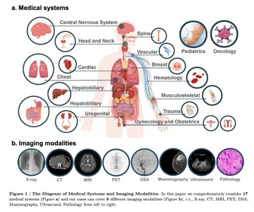

Research
* denotes equal contribution, and
† denotes corresponding author.
|
|
|
AutoRG-Brain: Grounded Report Generation for Brain MRI
Jiayu Lei,
Xiaoman Zhang,
Chaoyi Wu,
Lisong Dai,
Ya Zhang,
Yanyong Zhang,
Yanfeng Wang† ,
Weidi Xie†
Yuehua Li†
Technical Report, 2024.
AutoRG-Brain is the first regional brain MRI report generation system, that
enables comprehensive segmentation of each anomaly region and generation of well-organized narratives, to
describe observations in different anatomical region. Additionally, we curate a dataset for grounded report generation, termed as
RadGenome-Brain MRI, with 3,408 multi-modal scans, reports, and ground truth anomaly segmentation masks.
The evaluations demonstrate that AutoRG-Brain generates high-quality report and segmentation,
aiding junior radiologists in aligning their reports with those of senior radiologists.
|
|

|
Can GPT-4V(ision) Serve Medical Applications ? Case Studies on GPT-4V for Multimodal Medical Diagnosis
Chaoyi Wu*,
Jiayu Lei*,
Qiaoyu Zheng*,
Weike Zhao*,
Weixiongt Lin*,
Xiaoman Zhang*,
Xiao Zhou*,
Ziheng Zhao*,
Ya Zhang,
Yanfeng Wang ,
Weidi Xie†
Technical Report, 2023.
In this report, we evaluate GPT-4V for multimodal medical diagnosis at case studies, covering 17 human body systems, across 8 clinical imaging modalities. As the cases shown, GPT-4V is still far from clinical usage.
|
|
{kind=link}